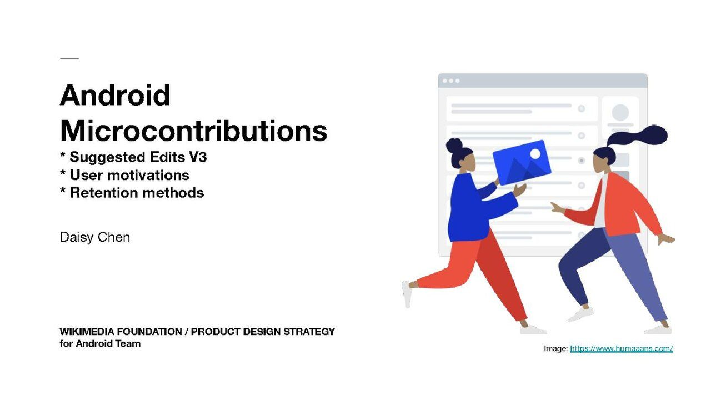

References / Other / 382
Wikimedia Foundation research report cover with Humaaans figures
The title slide of a 2019 Wikimedia Foundation design research report: bold black type on the left and two Humaaans figures passing an image card in front of a pale app window on the right.
- Source
- Wikimedia Commons: Android Microcontributions Phase 1 & 2 Findings Report
- Creator
- Daisy Chen, Wikimedia Foundation Product Design Strategy
- Made
- 2019 (dated 2 December 2019)
- Style
- Corporate Memphis (agent-proposed, not yet reviewed by a person)
- Moods
- Friendly, corporate, clean
- Evidence
- Inspected the 1280 × 720 rendering of page 1 of the PDF on Wikimedia Commons and stored it. Only the title slide was reviewed.
- Reviewed
- Rights
- Open license, stored. License: CC-BY-SA-4.0. Rights policy
Context
Commons describes the file as user research on what motivates and retains Wikipedia editors who use the section editor in the Android app, by Daisy Chen, under CC BY-SA 4.0. Wikimedia Commons.
The slide credits its image to humaaans.com.
Observed
- The left half has a short rule and a heavy black sans-serif title, “Android Microcontributions”, with three bullet lines and the author’s name.
- On the right, a pale grey browser window shows grey placeholder lines and circles like a wireframe list.
- Two figures stand in front of it: one in a blue top and red trousers holds out a blue image card, the other in a red jacket and navy trousers reaches for it.
- The figures have small blank heads, long limbs, and flat fills without outlines; the page is white.
Why it belongs
It shows the style as off-the-shelf corporate furniture: free figures added to a research deck to make it friendly, with no custom drawing.
Borrow
Pair one flat figure scene with a wireframe window behind it to signal “product” without showing a real screen.
Measured
Machine-extracted by tools/image-traits.py on . Full measurement.
- Mean chroma
- 0.03
- Palette
- #ffffff 83%
- #f1f1f1 4%
- #1b38cf 2%
- #c7cdd4 1%
- #e1e4e7 1%
- #ea5140 1%
- #202133 1%
- #5b69a8 1%

